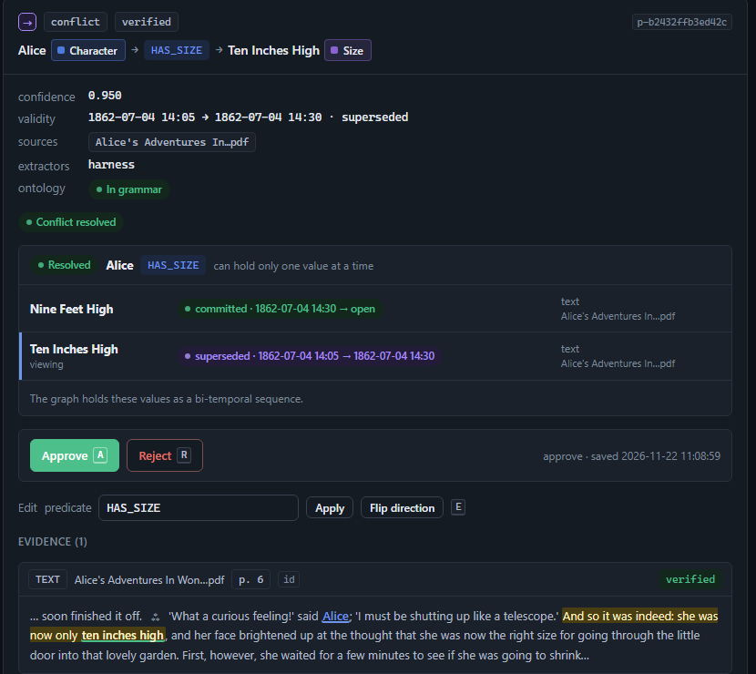
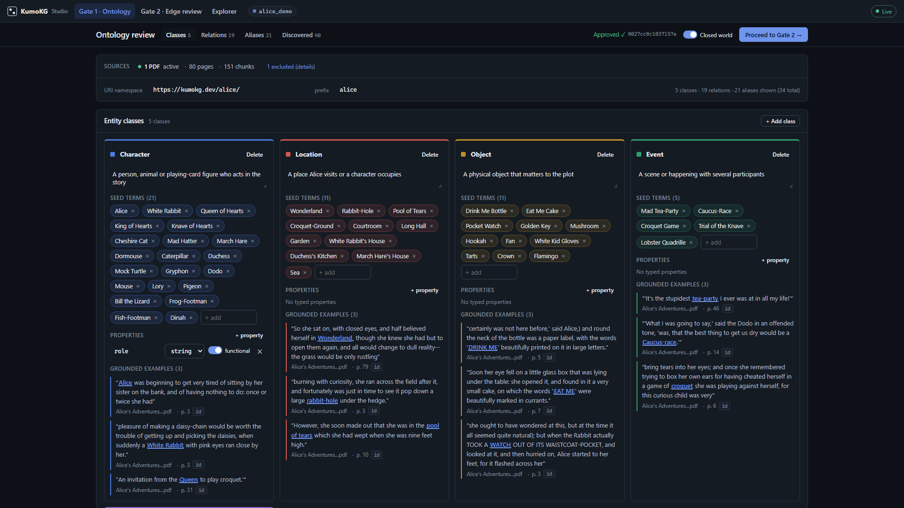
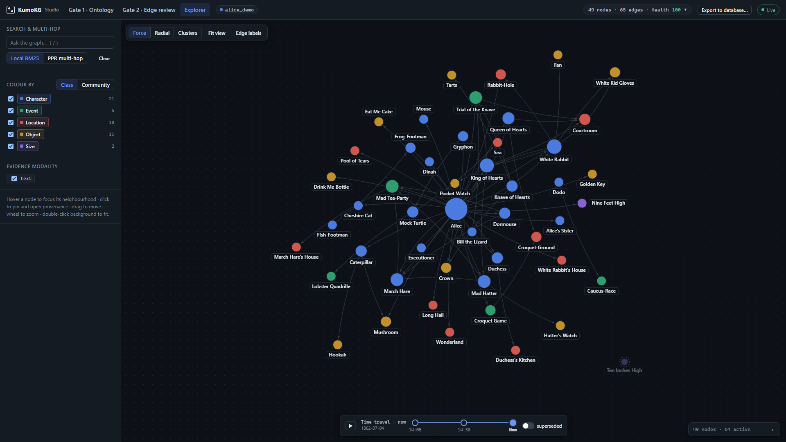
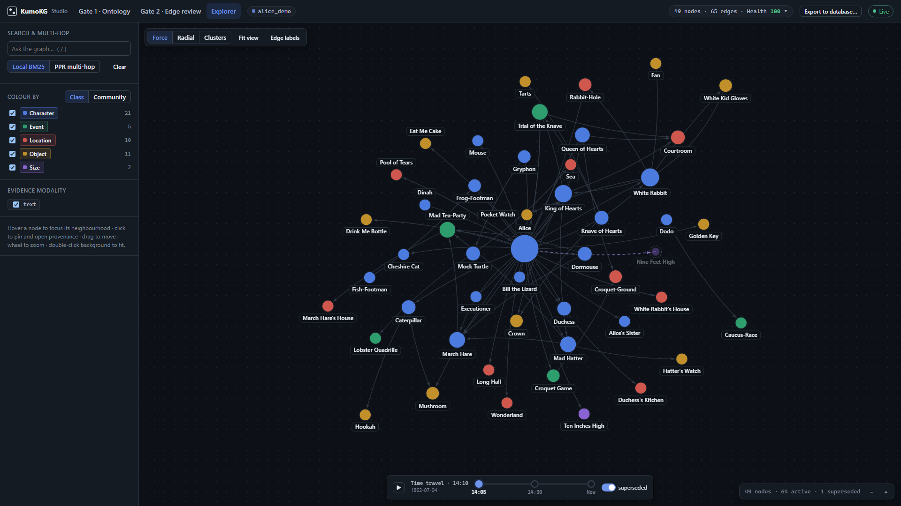

Agent skill for Claude Code, Codex, Cursor and OpenCode
Turn any data into a verified knowledge graph.
KumoKG runs inside the coding agent you already use. Every edge carries a verbatim quote you can check.
$ npx skills add HimanshuMohanty-Git24/kumokg
Installs into
- Claude Code
- Codex
- Cursor
- OpenCode

Every edge has a receipt.
Each claim is re-checked in code against its source. A claim that cannot be grounded is quarantined, never committed.
- quote + page
- table cell
- JSON pointer
- notebook cell
- image region
"The Knave of Hearts, he stole those tarts"
From a folder to a graph you can trust.
Audit
Route PDFs, tables, JSON, notebooks and scans. Duplicates are excluded with a reason.
Approve
Review the ontology in the local Studio, or run fully autonomous.
Extract
Your agent does the extraction. Code verifies every quote.
Review
Resolve conflicts. Corrections become bi-temporal history.
Ship
Query with citations, patch live, export or serve over MCP.
A local Studio for the calls that matter.
Binds to 127.0.0.1, works offline, and refreshes live while your agent patches the graph.



See it run, end to end.
Ship it anywhere.
Export verified bundles to ten databases. verify-export re-parses each one and checks node and edge parity.
- Neo4j
- PostgreSQL + AGE
- DuckDB
- FalkorDB
- Memgraph
- Amazon Neptune
- ArangoDB
- TigerGraph
- JanusGraph
- RDF / OWL / SHACL
Or mount it in any agent over MCP.
$ kumokg serve-mcp --workspace ./my-kg
- kg_query
- kg_ppr_multihop
- kg_get_evidence
- kg_time_travel
- kg_patch
- kg_doctor
- kg_export
Install once, use it in every harness.
$ npx skills@latest add HimanshuMohanty-Git24/kumokg --skill kumokg
Then ask your agent: "Build a knowledge graph from ./docs and open the Studio." Requires Python 3.11+ and uv; the installer needs Node.js 22.20+.